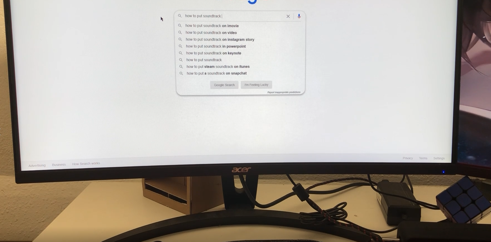
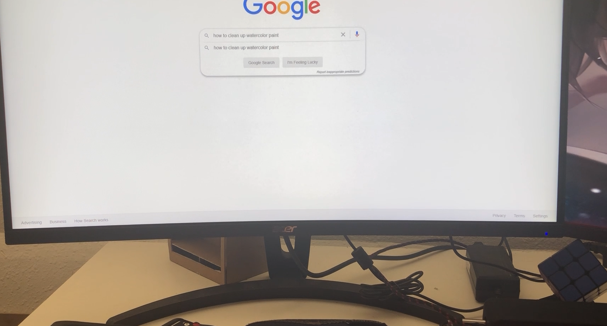

Video Art
Present Time
In this piece I was creating a looping dream, have any of your dreams like that?
Parallel Space


In this piece I make two different video and with the same voice track, can you find out witch video from the original sound track?
SF in Google Map

This video is creat by real time recording, the idea I have is what if google street can be realtime maping? So I took this idea and make this in San Francisco